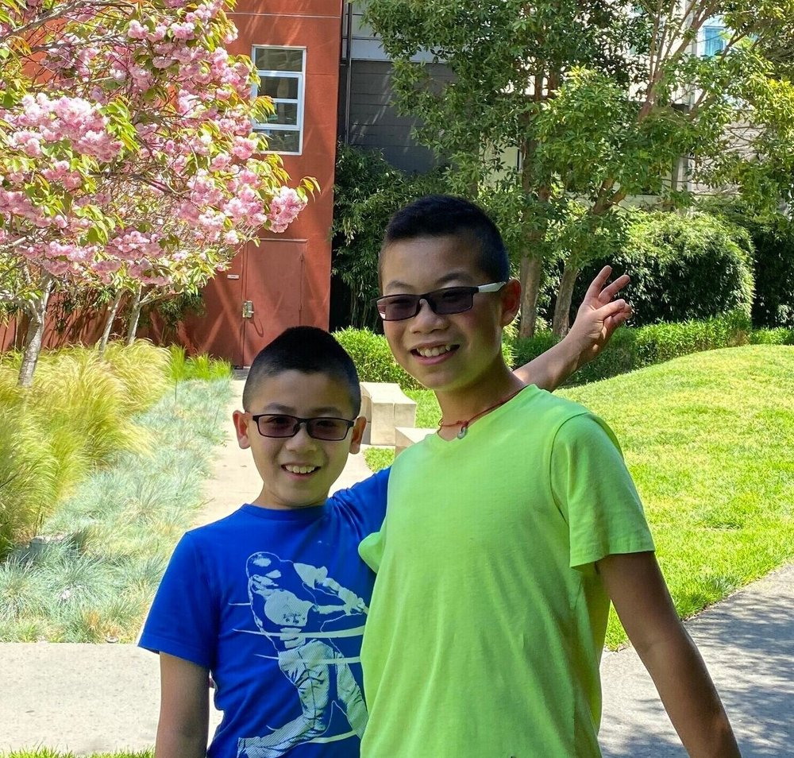
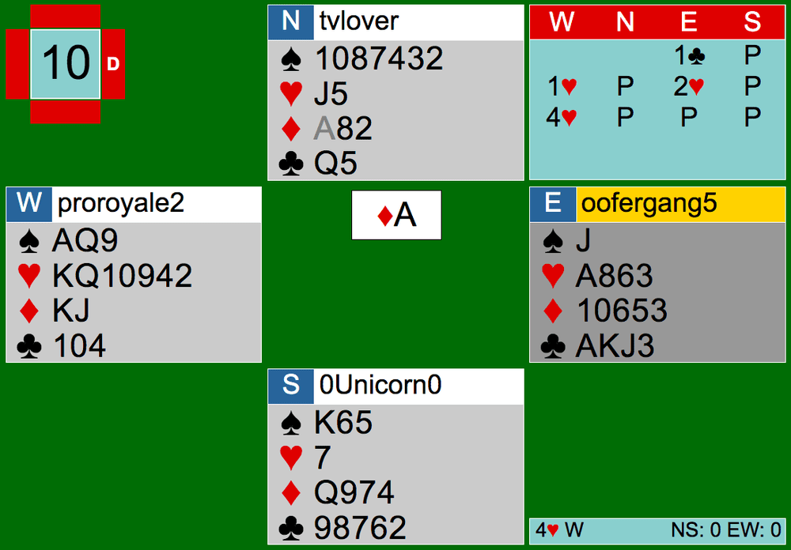

“It felt great [to win],” says Kyle Lin, 12, as he looks back on his outstanding performance in the Youth North American Online Bridge Championships with his brother Keith Lin, 10. Keith and Kyle are among the many Cardology Kidz players who attended the YNAOBC 2020.

Due to the COVID-19 pandemic, the Youth North American Bridge Championships originally scheduled to be in Montreal were cancelled. The YNABC was now hosted online on Saturday, July 25 from 9am-3:30pm Pacific and became the YNAOBC. There were two stratified sections: Cardrook pairs (0-20 masterpoints) and Open pairs (0+ masterpoints). The Lins placed second overall in the afternoon session of the Cardrook pairs game with a 64.23% game.
One of their best boards include Board 10, where they smoothly bid to a game contract of 4H and were the only ones who made 6 in a hearts game contract.
When discussing the board, Kyle Lin shares his thoughts; “Seeing that the Ace of diamonds was the opening lead, if I counted all my losers, I would make all but one depending on the spade finesse.” Lin notices right away that the King of spades must be in South or he will only make 5 rather than making 6. Lin plays the hand beautifully by beginning to draw trump and crossing over to dummy with a low club to the Ace. He does this in hopes to play the Jack of spades on the board, finessing South for the King. Luckily, the King was onside and North played the TS on the Queen of spades next trick, allowing Lin’s 9 of spades to be set up for a score of 4H+2. The Lins scored 100% on this board.

They expressed their satisfaction of their scores. “We were up at the 60s and 70s [percent game] throughout the tournament, it felt really good to know [we’re doing well],” Lin adds.
Keith and Kyle have been playing bridge for roughly three years now. They practice weekly at Cardology Kidz. In a recent interview, Keith says, “Cardology has been with us since the beginning [of our bridge careers].” The Lins express their gratitude to the club for their continuous support. “Practice makes progress, especially when you are surrounded with [Cardology’s coaches]” they claim. Thanks to Cardology’s generous volunteers and well-organized team games, the Lins are able to constantly “improve and learn new skills.” They are working towards playing in the Youth Open Pairs in the future.
The Lins aren’t the only ones who received a high standing in the YNAOBC this year. Other dedicated players like Nathan Chow and myself, Helen Chow, placed 6th overall in the Open Pairs with a 59.37% game. Aldwyn Lin, who practices at Cardology weekly, and his partner placed 9th overall in Cardrooks. CK Hooligans players Rohan Kumar and his partner, and Zhivan and Aydin Khaleeli placed remarkably in Cardrooks as well. As CK players take over the leaderboards, Lin hopes these tournaments encourage more players of all levels to learn and play bridge at Cardology.